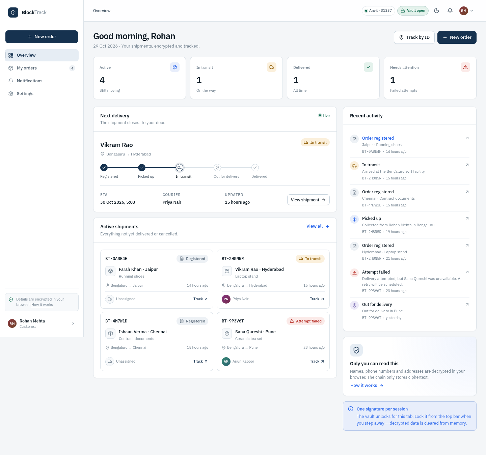
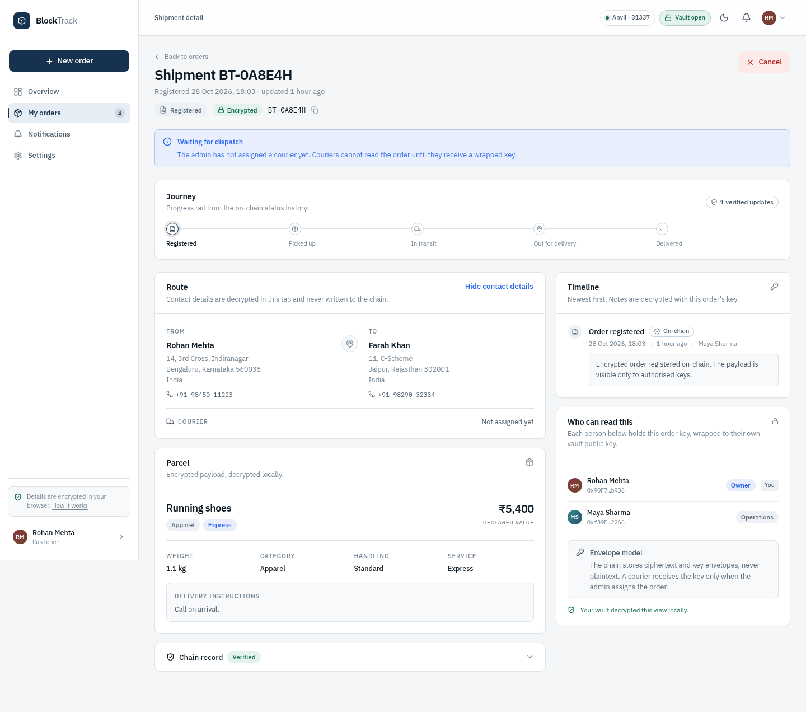
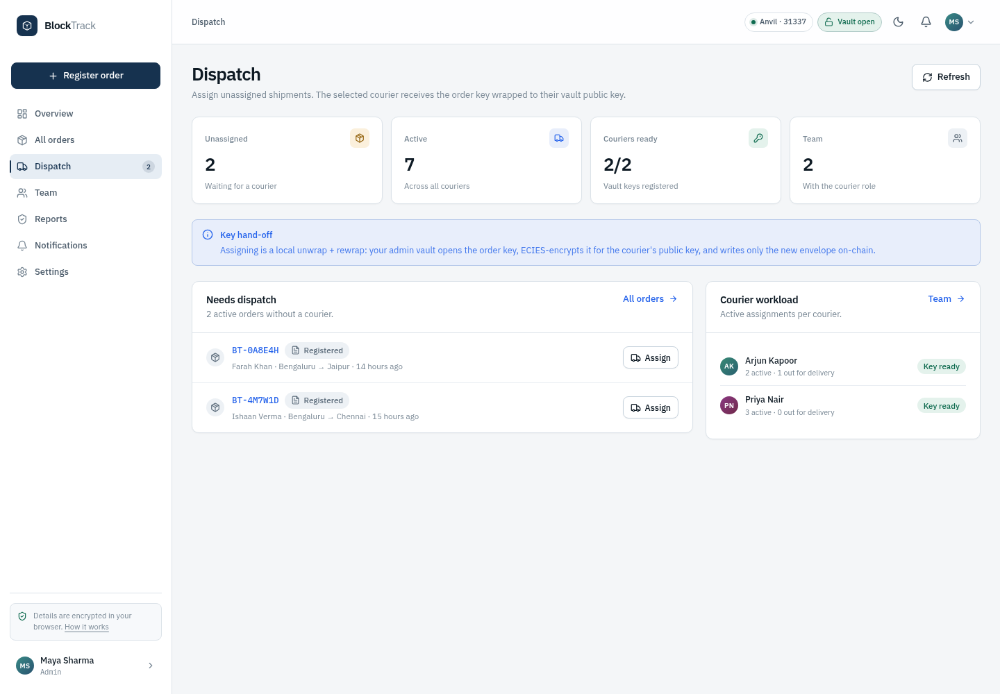
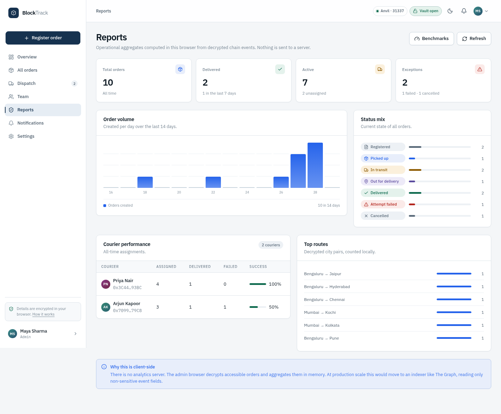
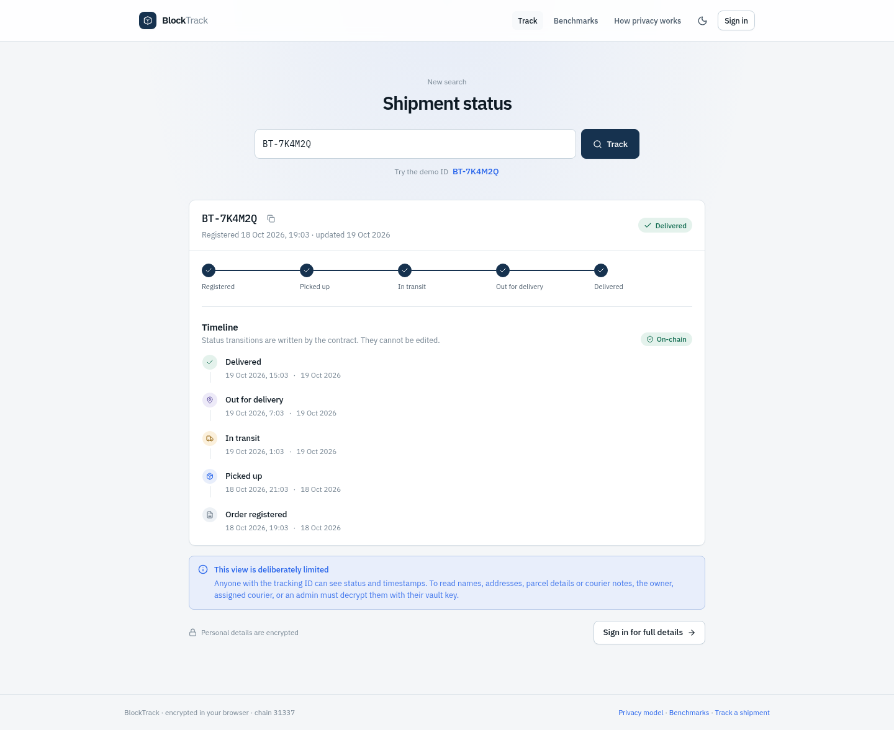
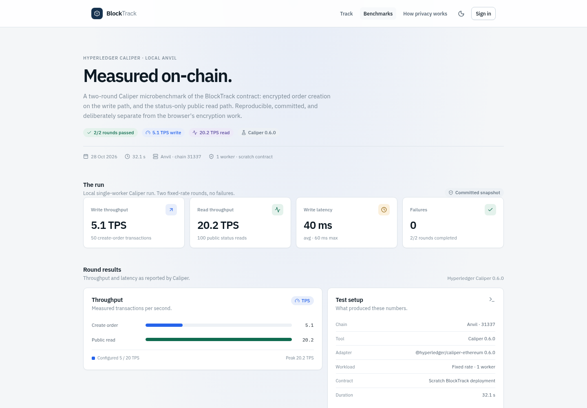

A privacy-preserving parcel tracking DApp. Final scope, implemented system, evidence and ownership.
01Executive summary
BlockTrack is a working Ethereum DApp for parcel tracking that treats privacy as part of the design rather than an afterthought. The chain keeps a tamper-evident record of who changed a shipment and when; the shipment details, addresses and courier notes remain encrypted in the browser.
The delivered system has four experiences: a customer who creates and tracks orders, an operations admin who dispatches and manages the courier team, a courier who updates only assigned shipments, and a public tracker that reveals status and timestamps but no personal data. There is no backend, database or account server. The frontend is a static React application that talks directly to an Anvil/Ethereum JSON-RPC node.
What was delivered
- A Solidity contract with role-based access, customer/admin/courier order flows, a seven-state status machine, encrypted payloads and per-order key envelopes.
- A browser-side cryptographic layer: AES-256-GCM per order, ECIES key wrapping, and a vault key derived from a wallet signature through HKDF-SHA256.
- A complete React product with 15 page views across 17 route entries, a custom Cold Precision design system, light/dark themes, responsive navigation and mobile layouts.
- Deterministic demo data: 10 seeded orders, 7 courier assignments and 21 timeline updates across six Anvil personas.
- Verification evidence: 34 contract tests, 7 crypto tests, a 21-check browser E2E flow, 24 captured UI views and a two-round Caliper benchmark.
- Documentation: a privacy model, a viva script, an implemented-system README, a benchmark page, and this report.
What changed from the original synopsis
The original plan described a Hardhat project deployed to Sepolia, with a backend/API component and plaintext parcel records on-chain. The final system deliberately departs from that plan in four important ways:
| Area | Original synopsis | Final implementation |
|---|---|---|
| Execution environment | Ethereum Sepolia testnet | Local Anvil chain (31337) with deterministic seeded data; the code is chain-agnostic, but Sepolia was not executed. |
| Contract toolchain | Hardhat | Foundry (Forge tests, Anvil, deploy/seed scripts). |
| Backend | Backend/API support component | Removed. Static React frontend reads and writes the chain directly. |
| Data model | Parcel records and history on-chain | Encrypted payload plus wrapped per-order keys on-chain; plaintext never leaves the browser. |
Table 1. The four headline changes. Section 3 gives the full comparison and the reasons.
The changes were not incidental. Removing the backend protects plaintext from a server and removes a second source of truth. Encrypting the payload makes the on-chain audit trail compatible with customer privacy. Choosing Anvil makes the demo reproducible without faucets or real PII. The trade-offs that come with those choices — client-side indexing, admin key custody, no true revocation, and the absence of a Sepolia deployment — are documented in Sections 10 and 17 rather than hidden.
02Introduction and problem statement
Parcel tracking looks simple from the outside: a tracking number, a status, a timeline. The trust model behind it is not simple. The same organisation that records a delivery also controls the database, the permissions and the history.
The original problem
Centralised tracking systems can be changed by the organisation that operates them. An administrator can correct, backdate or remove a status update. For most day-to-day logistics this is acceptable; for disputes, audits and multi-party supply chains it is a weakness. A shared, append-only record makes the history independently verifiable and gives every participant the same view of what happened.
The problem the implementation uncovered
A naive blockchain solution fixes integrity but breaks privacy. If parcel records, names, phone numbers and addresses are written to a public ledger, the audit trail becomes a permanent public data leak. The project therefore had to answer a sharper question:
BlockTrack answers with an encrypted envelope model. The chain stores ciphertext, status, timestamps and wrapped key envelopes. Authorised readers unwrap the per-order key in their browser. The public tracker uses separate getters that return status and timestamps only.
Contributions
- A protocol design that separates write authorisation (on-chain roles) from read authorisation (cryptographic key envelopes).
- A complete role-aware product for customers, operations and couriers, plus a deliberately limited public view.
- A client-side key hierarchy built on wallet signatures, HKDF, ECIES and AES-256-GCM, with no server or password.
- An evidence base of contract, crypto, browser and benchmark tests that is reproducible on a single machine.
- An honest record of trade-offs — including what was deferred (Sepolia) and what the prototype does not protect (metadata, post-compromise revocation).
Report structure
The report moves from the delivered product to the engineering underneath it, then to evidence and ownership. Section 3 is the most important section for understanding what changed. Section 10 is the most important section for defending the choices. Section 14 maps the final work to the team.
03Scope and changes from the synopsis
The original synopsis was a planning document. The final scope is the implemented system: narrower in deployment, broader in privacy and product depth. This section records the changes explicitly so that the report and the demonstration match.
3.1 Final scope
In scope
- Customer, admin/operations and courier accounts with on-chain roles.
- Customer order creation and admin-created orders for customers.
- Seven-state shipment lifecycle with enforced transitions.
- Encrypted payloads, encrypted notes, wrapped key envelopes and local decryption.
- Dispatch, courier assignment and reassignment.
- Authenticated timeline and public status-only tracking.
- Local Anvil deployment, seeded demo data and one-command startup.
- Contract, crypto and browser tests; Caliper microbenchmarks; documentation.
Out of scope
- Real courier integration, live GPS or route optimisation.
- Payments, escrow, tokens, NFTs or supply-chain automation.
- A production backend, database, email/SMS notifications or server search.
- A Sepolia deployment in the delivered demo (deferred; see 3.3).
- Regulatory compliance, audits or real personal data.
3.2 Original plan versus final implementation
| Area | Original synopsis | Final implementation | Reason for the change |
|---|---|---|---|
| Network | Ethereum Sepolia | Local Anvil, chain 31337, backdated genesis | Deterministic demo, no faucet, no real PII, reproducible latency; Sepolia remains a configuration exercise. |
| Contract toolchain | Hardhat | Foundry 0.8.24 + Forge + Anvil | Solidity-native tests, fast local chain, cleaner deploy/seed scripts. |
| Backend/API | Supporting application services | No backend; static SPA + RPC | Avoid a plaintext server, a second source of truth and account infrastructure; the chain is the shared state. |
| Data on-chain | Parcel records, status history | Ciphertext, status, addresses, wrapped keys, profile keys | Public ledgers must not contain readable PII. Status-only public views are intentional. |
| Order ownership | Admin creates parcels | Customer creates; admin can create for a customer | A real user flow needs self-service; admin-created orders cover walk-ins. |
| Roles | Admin, logistics, public | Admin, courier/logistics, customer, public | Customers need their own orders; “logistics” is presented as a courier role. |
| Tracking | Public parcel history | Public status-only; authenticated full timeline | History and actor addresses can leak relationships; the public view minimises exposure. |
| Wallet | MetaMask | One-click Anvil personas + injected-wallet path | Removes wallet setup friction for the demo while keeping MetaMask support. |
| Testing | Hardhat + manual UI | 34 Forge, 7 crypto, 21 E2E, visual QA | Evidence at every layer; frontend and encryption are first-class risks. |
| Sepolia | Deploy and test | Not executed; local demo delivered | Time and demo value; chain-agnostic code and a documented path (Section 13.4). |
| Benchmarking | Not planned | Hyperledger Caliper, 2 rounds + website page | Adds quantitative evidence for the contract path and a standard tool for the presentation. |
| Public page | Tracking interface only | Tracking, privacy model and benchmark pages | The privacy model is part of the product claim; the benchmark is part of the evidence. |
Table 2. Scope changes. The four headline changes in the Executive Summary are rows 1, 3, 4 and 10.
3.3 Why Sepolia was not the final demo
Sepolia was in the original objectives and remains a valid deployment target. It was not used for the delivered demonstration for four reasons:
- Reproducibility. The demo starts from a known ten-order chain with fixed personas and a backdated timeline. A public testnet depends on faucets, confirmation times and the current state of the network.
- Privacy and safety. The seed uses fictional data and an unencrypted set of publicly known Anvil keys. Publishing that on a public testnet would still create a permanent, if fictional, data trail and public keys.
- Scope control. The team chose to spend the available effort on the privacy model, the full role flows, tests and the benchmark rather than a deployment whose contract address would be the main difference.
- Architecture. The contract is chain-agnostic. The frontend reads a runtime
deployment.json; the deploy script accepts any RPC URL. A Sepolia deployment is a configuration and wallet step, not a redesign.
3.4 The scope statement
The project is a proof of concept for privacy-preserving parcel tracking. It demonstrates the full lifecycle of an order, the role boundaries, the encryption design and the audit trail. It does not attempt to replace a real logistics platform, connect to real couriers, or store real personal data.
04Objectives and outcomes
The original objectives are still the right measures of the project. The table records the final outcome and the evidence for each one, including the one objective that was deliberately deferred.
| Objective | Final outcome | Status / evidence |
|---|---|---|
| Build an Ethereum DApp | React SPA + Solidity contract running against Anvil; full customer, admin, courier and public experiences. | Achieved 17 route entries; build passes. |
| Record status updates on-chain | Every transition is a transaction; the contract stores status, actor and timestamp and emits events. | Achieved 21 seeded updates; 7-state machine. |
| Verifiable history | Authenticated timeline with actor names, timestamps and encrypted notes; public status/timestamps. | Achieved timeline + public getters. |
| Restrict updates to authorised accounts | Owner/admin for cancellation; assigned courier or admin for updates; OpenZeppelin roles for courier management. | Achieved contract tests and E2E. |
| Track by unique ID | Public tracker and customer order list use the tracking ID; IDs are unique per order. | Achieved public page, E2E. |
| Deploy on Sepolia | Not executed. The demo runs on local Anvil; the code is chain-agnostic and a Sepolia path is documented. | Deferred See 3.3 and 13.4. |
| Add privacy (added) | Per-order AES-256-GCM, ECIES key envelopes, signature-derived vault, status-only public view. | Achieved 7 crypto tests + privacy page. |
| Complete user flow (expanded) | Customer creation, admin dispatch/team/reports, courier updates, notifications, settings, public tracking. | Achieved 21 E2E checks. |
| Test the system | 34 contract tests, 7 crypto tests, 21 browser checks, desktop/dark/mobile visual QA. | Achieved see Section 11. |
| Benchmark (added) | Hyperledger Caliper 0.6.0: 50 order writes and 100 public reads, no failures. | Achieved see Section 12. |
| Document and demonstrate | README, privacy model, viva script, benchmark page, this report. | Achieved docs/ and demo. |
Table 3. Objectives and final status. “Added” objectives were not in the original synopsis but were necessary to deliver the privacy claim.
4.1 What success means
Success is not “a contract exists”. The meaningful result is that a customer can create an order, operations can dispatch it, a courier can update it, the customer can read the update, the public can verify the status, and an unauthorised wallet cannot read the payload. That is exactly the flow the E2E test exercises.
4.2 The deferred objective
The Sepolia objective is the only one not executed. It is treated as a
deferred deployment, not as a hidden failure. The contract and
frontend are network-agnostic; what remains is a funded test wallet, a
public RPC, a deployment.json pointing at Sepolia, and a real MetaMask
walkthrough. Section 13.4 lists the steps.
05System architecture
BlockTrack is a static browser application and a Solidity contract. There is no application server between them. The browser owns the wallet, the vault and the crypto; the chain owns the shared audit trail and the role checks.
No backend, API, database, cookie session or password store. The browser is the only place where a plaintext order exists.
5.1 Components
| Layer | Responsibility |
|---|---|
| Wallet context | Connects a demo persona or an injected wallet; tracks chain ID, network mismatch and signer; owns no encryption keys. |
| Vault context | Signs the fixed vault message, derives the vault key through HKDF, registers/compares the public key, and clears decrypted state on lock or account change. |
| Crypto module | Pure functions for AES-GCM payload/note encryption, ECIES wrapping, order-key generation and AAD binding. |
| Data hooks | TanStack Query hooks over ethers: profiles, roles, orders, histories and notifications. No server cache; the query cache is the local cache. |
| Contract | Roles, profiles, orders, status transitions, history, key envelopes and public getters. It never decrypts. |
| Chain | Shared, append-only state and events. Anvil for the demo; any EVM RPC in principle. |
5.2 Request and data flow
- Boot. The app loads
deployment.json, connects the RPC, restores a demo persona or an injected wallet, and waits for a vault unlock. - Unlock. The wallet signs the fixed message; the browser derives the vault key; the public half is compared with the on-chain profile.
- Create. The browser generates a tracking ID and an order key, encrypts the payload, wraps the key for the owner and admins, sends one transaction.
- Dispatch. The admin unwraps the order key, wraps it for the courier, and calls
assignCourier; only the new envelope is stored. - Update. The courier or admin encrypts a note and calls
updateStatus; the contract enforces the transition and appends history. - Read. The browser reads events and orders, unwraps its own key, decrypts locally, and derives dashboards, timelines and notifications.
- Public. The tracker calls status-only getters; no ciphertext, key envelope or PII is requested.
5.3 Design principles
Chain as the shared truth
Addresses, status, timestamps and key envelopes are the source of truth. The UI is a derived view, not a second database.
Confidentiality is cryptographic
The contract cannot enforce read access. Read access is enforced by who holds a wrapped order key; the public getters are a separate, deliberately limited surface.
Writes are on-chain permissions
Roles and state transitions are contract rules. A forged UI request cannot bypass them.
The demo is deterministic
Anvil, fixed personas and a seeded ten-order timeline make every screenshot and test reproducible; the production path stays chain-agnostic.
5.4 Why there is no backend
A backend would be the natural place for indexing, notifications and account management, but it would also be the natural place for plaintext. The project deliberately removes that trust surface. The cost is that the browser filters events, computes aggregates locally and stores read state in local storage. At ten orders that is instant; at production scale it would need an indexer that reads only non-sensitive fields.
06Smart contract design
The contract is intentionally small in scope and strict about state. It stores the order skeleton, encrypted blobs and key envelopes; it does not store names, addresses, parcel text or notes in plaintext.
6.1 Roles and permissions
| Role | Can do | Cannot do |
|---|---|---|
| Admin OpenZeppelin DEFAULT_ADMIN_ROLE | Add/remove couriers; create for a customer; assign/reassign; update any non-final order; cancel any non-final order; read every order key. | Bypass the status state machine; decrypt data for which no envelope exists. |
| Courier LOGISTICS_ROLE | Read assigned orders; update status on assigned orders; add encrypted notes. | Update an unassigned order; cancel; add/remove roles; read unassigned payloads. |
| Customer owner address | Create orders; read own orders; cancel before pickup. | Update status; read another customer's order. |
| Public | Read tracking status and timestamps by ID. | Read payload, notes or actor identity through the public interface. |
6.2 Data model
| Structure | Fields | Purpose |
|---|---|---|
| Profile | displayName, encryptionKey, exists | Public display name plus the 65-byte public key used to wrap order keys. |
| Order | trackingId, owner, courier, status, createdAt, updatedAt, ciphertext, exists | The public skeleton plus the encrypted payload. |
| StatusUpdate | status, timestamp, actor, encryptedNote | Append-only history; notes are encrypted. |
| Wrapped keys | orderKey → grantee → bytes; orderKey → address[] | One ECIES envelope per authorised reader; a list for discovery and revocation. |
6.3 Status machine
From OutForDelivery the shipment can also move to FailedAttempt, and from FailedAttempt back to OutForDelivery for a retry. Cancelled is reachable by the owner only while Created, and by an admin on any non-final state. Delivered and Cancelled are final.
6.4 Main functions
| Function | Caller | Behaviour |
|---|---|---|
registerProfile | any wallet | Stores a display name and a 65-byte public key once; rejects duplicate profiles and invalid keys. |
updateDisplayName | profile owner | Changes only the public display name. |
createOrder | customer | Creates an order owned by the caller. The holder list must include the owner and the primary admin. |
createOrderFor | admin | Creates an order for a customer, with the same holder requirements. |
assignCourier | admin | Checks the courier role, stores the new wrapped key, removes the previous courier's envelope. |
updateStatus | assigned courier / admin | Enforces the state machine, records the actor and timestamp, stores the encrypted note. |
cancelOrder | owner (Created only) / admin | Final cancellation with an encrypted reason; owner cannot cancel after pickup. |
getPublicStatus, getPublicHistory | anyone | Return status and timestamps only — the public tracker's entire data surface. |
getWrappedKey, getKeyHolders, hasAccess | anyone | Return opaque envelopes and holder addresses; access is proven by whether the caller can unwrap. |
6.5 Limits and events
Enforced limits
- Tracking ID: 1–32 bytes.
- Ciphertext: up to 8 KiB.
- Encrypted note: up to 2 KiB.
- Wrapped key: 1–256 bytes.
- Display name: 1–48 bytes.
- Public key: exactly 65 bytes, starting with
0x04.
Events for discovery
OrderCreated, CourierAssigned, StatusUpdated, KeyGranted, KeyRevoked, ProfileRegistered, DisplayNameUpdated, LogisticsAdded, LogisticsRemoved.
The frontend queries events rather than maintaining a server index.
6.6 Security and engineering notes
- Holder validation. The contract requires the owner and the primary admin in the holder list, rejects duplicates and zero addresses, and validates every envelope length. This stops an order from being created without an operations recovery key.
- State finality. Delivered and Cancelled are final; every update checks the legal transition before writing. The UI mirrors the same rules but the contract is authoritative.
- No funds, no external calls. The contract is not payable and makes no external calls, removing the usual reentrancy and value-transfer attack surface.
- Custom errors. A compact error surface (for example
MissingOwnerKey,InvalidStatusTransition) makes failed transactions easier to diagnose and cheaper than string reverts. - Bytecode margin. The runtime is 23,657 bytes against the 24,576-byte EIP-170 limit; the creation bytecode is 24,348 bytes. The margin is under 1 KB, so further features should first reduce or externalise code.
- Confidentiality is not verified on-chain. The contract validates lengths, not encryption. Integrity is enforced by AES-GCM authentication and the tracking-ID AAD in the client; a malformed ciphertext is rejected at decryption.
07Privacy and encryption design
The privacy model is the intellectual core of the project. It separates who can write (on-chain roles) from who can read (cryptographic key envelopes), and keeps the public ledger to status and timestamps.
7.1 Threat model
| Actor | Can observe / do | Cannot do |
|---|---|---|
| Passive chain observer | Addresses, status, timestamps, ciphertext lengths and public profiles. | Read names, addresses, parcel text or notes. |
| RPC provider | Addresses, timing, ciphertext and the browser's IP. | Decrypt payloads. |
| Another customer | Their own order payloads; public status of any order. | Unwrap someone else's order key. |
| Unassigned courier | Their own profile and any public status. | Read the payload of an unassigned order; update it. |
| Operations admin | Every order payload and note by design. | Alter history or bypass the contract state machine. |
| Compromised browser | Whatever the tab can access while unlocked. | Nothing; the app cannot protect a compromised device. |
7.2 Key hierarchy
7.3 Vault key derivation
blocktrack.vault.v1 · info secp256k1-aes256gcm · 32-byte output7.4 Cryptographic choices
| Primitive | Use | Why |
|---|---|---|
| AES-256-GCM | Payload and note encryption; fresh 12-byte IV per envelope; 16-byte tag. | Authenticated encryption in WebCrypto; detects tampering and wrong AAD. |
| HKDF-SHA256 | Stretch the 65-byte signature into a 32-byte secp256k1 key. | Domain-separated, deterministic, standard KDF; avoids using a wallet signature directly as a key. |
| secp256k1 / ECIES | Wrap the order key for each reader; unwrap with the vault key. | Ethereum-native curve; one key pair per user; no server key store. |
| AES-GCM AAD | ${trackingId}|payload|v1 and ${trackingId}|note|v1. | Binds ciphertext to one order and one purpose; prevents moving a valid envelope to another ID. |
| EIP-191 | The fixed vault message signature. | Standard personal_sign flow supported by MetaMask and ethers. |
7.5 What is public and what is encrypted
Public on-chain
- Tracking ID and order existence.
- Owner and courier addresses.
- Status transitions and timestamps.
- Display names and encryption public keys.
- Ciphertext length and key-envelope count.
- Caliper benchmark contract (separate scratch deployment).
Encrypted / private
- Sender and recipient names.
- Phone numbers and full addresses.
- Parcel description, category, weight, value.
- Delivery instructions.
- Courier notes, locations, ETAs and proof of delivery.
- Cancellation reason.
7.6 Who can read what
| Reader | How they get the key | Scope |
|---|---|---|
| Customer | Envelope wrapped at creation for their public key. | Own orders only. |
| Admin | Envelope wrapped at creation for the primary admin; required as a holder. | Every order, for dispatch and support. |
| Courier | Envelope wrapped by the admin at assignment. | Only assigned orders; loses the envelope on reassignment. |
| Public | No envelope exists. | Status and timestamps only. |
7.7 Revocation, recovery and metadata
- Reassignment removes the previous courier's on-chain envelope but cannot erase plaintext already read. True revocation needs a new order key, re-encryption and re-wrapping — documented as future work.
- Lost wallet, lost key. There is no recovery server. Operations can still recover the shipment operationally because it holds a key, but that is governance, not cryptographic user recovery.
- Metadata remains public. Addresses, timing, order frequency and ciphertext size can be correlated. Encryption hides content, not the existence of a relationship.
- Admin trust is explicit. Operations can read every order by design. This is the largest trust boundary and the most important caveat to state in the viva.
- No key rotation. The vault key is stable for a wallet. Rotating it requires re-encrypting or re-wrapping every order.
08Application and user experience
The DApp is not a single admin screen with a tracking box. It is a complete role-aware product: customers create and follow shipments, operations runs the network, couriers move parcels, and the public verifies status.
8.1 Four experiences
| Role | Primary job | Key surfaces |
|---|---|---|
| Customer | Create an order, follow its progress, read courier notes, cancel before pickup. | Dashboard · My orders · New order · Order detail · Notifications · Settings |
| Admin | Dispatch orders, manage couriers, update any non-final shipment, review aggregates. | Dashboard · All orders · Dispatch · Team · Reports · Settings |
| Courier | Read only assigned orders and add status updates with encrypted notes. | Dashboard · Delivery queue · Order detail · Notifications |
| Public | Look up a tracking ID and verify status without seeing personal data. | Track · Benchmarks · Privacy model |
8.2 Page map
| Page | Role | What it does |
|---|---|---|
/login | any | One-click Anvil personas or injected wallet; chain status; entry points to tracking and benchmarks. |
/dashboard | all signed-in | Role-aware overview: active, in transit, delivered, exceptions, next delivery, activity, dispatch list. |
/orders | customer, admin | Searchable/filterable order list; admin sees all, customer sees own; responsive cards. |
/orders/new | customer, admin | Three-step encrypted order wizard with local review; admin selects the customer. |
/orders/:id | authorised readers | Route, parcel, journey, timeline, key holders, chain record and role-specific actions. |
/queue | courier | Only assigned orders, filtered by action state, with quick update. |
/dispatch | admin | Unassigned orders, courier workload, key hand-off and assignment dialog. |
/team | admin | Courier role management, key status, customers, admins. |
/reports | admin | Volume, status mix, courier completion, top routes, benchmark entry point. |
/notifications | all signed-in | Chain-derived activity feed with local read state. |
/settings | all signed-in | Public display name, vault fingerprint, lock, theme, connection details. |
/track, /track/:id | public | Status-only tracking by ID; deliberately limited. |
/privacy | public | The envelope model, visibility table, derivation, honest limits. |
/benchmarks | public | Caliper results, methodology, reproduction commands and native report link. |
/not-found | any | Friendly 404 with tracking/privacy paths. |
8.3 Product walkthrough
The screenshots below are from the seeded demo (28 October 2026). They show the final, implemented interface rather than a mockup.





8.4 The Cold Precision design system
The UI was rebuilt around a custom token system rather than a component library. The goal was a calm, operational interface for sensitive data: cool gray canvas, deep navy, one blue accent, IBM Plex Sans and Mono, and no decorative gradients or glass effects.
Consistency
One set of colours, spacing, radii, type sizes and focus rings. Status is always a tint + icon pair, not colour alone. Light and dark themes share the same structure.
Responsive
Desktop sidebar → off-canvas drawer → bottom navigation. Tables become cards, toolbars stack, and action buttons compact at mobile widths. The screenshots were captured at 1440 px and 390 px.
Accessible
Labelled fields, 44 px targets, visible focus, semantic headings, dialog titles, status text alongside colour, and reduced-motion support.
Privacy cues
The vault chip is always visible, contact details can be hidden in place, encrypted badges mark private values, and locking the vault clears decrypted views.
8.5 UX decisions worth calling out
- One signature per session. The first unlock signs a fixed message; demo personas unlock automatically; the top bar shows “Vault open” and locks in one click.
- No plaintext preview before encryption. The new-order review shows the data locally, then the button says “Encrypt & register”; the transaction only receives ciphertext and envelopes.
- Role-appropriate actions. A customer sees “Cancel” on a Created order; a courier sees “Update status”; an admin sees assign, update and cancel. The UI never offers an action the contract will reject.
- Honest empty and error states. No orders, no key, not found, wrong network, chain unreachable and wallet-rejected transactions all have specific copy.
- Benchmarks as part of the product story. The public benchmark page makes the evidence inspectable without a login and links to the native Caliper report.
09Implementation and technology choices
The final stack is deliberately smaller than the synopsis. Fewer moving parts, fewer places for plaintext, and a test surface that covers the contract, the crypto and the browser.
9.1 Final stack
| Layer | Choice | Why this choice |
|---|---|---|
| Chain | Anvil 31337 (local) | Deterministic, free, private, instant; Sepolia remains configurable. |
| Contract | Solidity 0.8.24, OpenZeppelin 5.7 AccessControlEnumerable | Audited role primitives; enumerable roles make the admin/team UI straightforward. |
| Contract toolchain | Foundry · Forge · Anvil | Solidity-native tests, fast feedback, no separate JS test harness for the contract. |
| Frontend | React 18.3 · Vite 5.4 · React Router 7 · TanStack Query 5 | Small static SPA; server-state caching; no framework server. |
| Chain client | ethers 6.13 | Typed contract access, event queries, browser signer support. |
| Crypto | WebCrypto AES-256-GCM + HKDF · eciesjs 0.5 | Native authenticated encryption; ECIES over secp256k1 for key wrapping. |
| Wallet | Anvil personas + injected MetaMask path | One-click demo; real wallet supported for a Sepolia/production path. |
| UI | Custom CSS tokens · IBM Plex · Lucide | Consistent Cold Precision design without a component-library dependency. |
| Tests | Forge · node:test · Playwright-core + Chrome | Contract, pure crypto and real browser flows at the right layers. |
| Benchmarks | Hyperledger Caliper 0.6.0 + Ethereum adapter | Standard harness; isolated from runtime; produces a native report. |
| Version control | Git + GitHub · branch v2 | Milestone history and a reviewable final state. |
9.2 What the repository contains
Approximately 20,000 lines of source across the contract, frontend and scripts; 1,217 lines of contract plus tests.
9.3 How the frontend talks to the chain
- One contract wrapper.
lib/contract.jsconstructs ethers contracts from the synced ABI and the runtimedeployment.json;humanizeErrormaps custom errors and wallet rejections to readable copy. - Event discovery.
useOrdersqueriesOrderCreatedandCourierAssignedlogs, then loads the order, its wrapped key and its history. The tracking ID is non-indexed in the events so the client can read it; the owner/courier remain indexed for filtering. - Decrypt after fetch. The order key is unwrapped with the vault key, the payload is decrypted with the tracking-ID AAD, and notes are decrypted per history entry. A corrupted or mismatched ciphertext becomes a recoverable error on the card, not a crashed page.
- Query discipline. Query keys include the contract, wallet and vault fingerprint. Polling refreshes role/order data; the cache is cleared on lock and on account/persona change so decrypted data does not survive a session boundary.
- No server API. Profiles are read from
getProfile, roles from enumerable AccessControl functions, public tracking from status-only getters. The frontend derives notifications, reports and dashboards locally.
9.4 Vault and session lifecycle
At boot the app restores a demo persona or an injected wallet. A demo persona
signs the fixed vault message locally and derives the key automatically; an
injected wallet asks for one personal_sign. The public half of the derived
key is compared with the on-chain profile. A mismatch produces a deliberate
gate instead of a silent decryption failure. Locking the vault zeroises the
key array, clears the query cache and unmounts decrypted views. Account and
chain changes reset the session.
9.5 Reproducible development workflow
npm run dev starts Anvil with a backdated genesis, builds the
contract, syncs the ABI, deploys, seeds the demo and starts Vite. The seed
creates six personas, ten orders, seven assignments and twenty-one updates
with realistic timestamps. npm run build produces a static
bundle; npm test runs Forge and crypto tests; npm run
test:e2e runs the browser flow; npm run bench runs
Caliper; npm run screens regenerates the visual evidence.
The main implementation trade-off is bundle size: the production build is about 924 KB (305 KB gzip) because ethers, eciesjs and every route are eagerly imported. Route-level code splitting is the obvious next optimisation, but it was not allowed to delay the privacy work.
10Key decisions and trade-offs
The project is best defended by being explicit about what was chosen, what was rejected and what each choice costs. None of the decisions below is free; each one buys a property the project needed.
| Decision | Alternative rejected | Why chosen | Cost / mitigation |
|---|---|---|---|
| Public chain for audit | Centralized database | Tamper-evident shared history; no single operator can rewrite it. | Gas, latency and public metadata; mitigated by encryption and status-only views. |
| Encrypted payload on-chain | Plaintext parcel fields | Integrity without a public PII leak; the chain remains the only shared state. | 8 KiB cap, gas and ciphertext lengths; production would anchor an IPFS/Arweave CID. |
| Per-order key + ECIES | Contract-level read ACL | Read access becomes cryptographic; no server key store; one key per order limits blast radius. | Revocation is not retroactive; recovery is hard; documented in Sections 7 and 17. |
| Signature-derived vault | Password + server KMS | No password, no server, no recovery database; the wallet is the identity. | One signature per session; wallets must be deterministic; no recovery if the wallet is lost. |
| No backend | API + database | No plaintext server, no second source of truth, static hosting. | Client-side event scanning, no server notifications/search; an indexer is future work. |
| Local Anvil demo | Sepolia deployment | Deterministic, free, private, reproducible; no faucet dependency. | No public testnet evidence; documented as deferred and chain-agnostic. |
| Foundry | Hardhat | Fast Solidity-native tests, Anvil, clean deploy/seed scripts. | Different JS tooling ecosystem; the frontend still has its own tests. |
| Public status-only | Full public history | Protects names, relationships and notes; the public can still verify status. | Less public transparency; actor identity is available only to authorised readers. |
| Admin key custody | No admin key / threshold | Operations needs to dispatch and support every order. | Admin is a trusted reader; production should use threshold or split roles. |
| Custom design system | Tailwind / component library | Consistent Cold Precision language; no generic dashboard look; full control of states. | More CSS to maintain; documented tokens make it coherent. |
| Optional Caliper harness | No benchmark | Standard tool, repeatable report, quantitative evidence for the contract path. | Deprecated Ethereum adapter and Node 26 workaround; isolated from runtime. |
Table 10. The main engineering decisions. The four headline decisions are expanded below.
10.1 Why no backend?
The backend is where a normal tracking system would store plaintext, manage sessions and index events. It is also where the privacy claim would break. Removing it means a stolen server cannot leak shipment details, and there is no account database to secure. The browser becomes the only place a plaintext order exists. The cost is real: no server-side search, no push notifications, no password reset, and more work in the client. At demo scale those costs are acceptable; at production scale an indexer that reads only public fields can be added without reintroducing plaintext.
10.2 Why encrypt the on-chain payload?
A blockchain is permanent by design, which makes it the worst place for a mistake with personal data. If the payload were plaintext, the audit trail would become an irreversible public leak. Encrypting the payload keeps the chain useful for ordering, status and key envelopes while making the content useless to an observer. The trade-off is that the contract cannot inspect or validate the plaintext, and the client must handle decryption failures. The AAD binding and authenticated encryption make tampering detectable.
10.3 Why local Anvil instead of Sepolia?
Sepolia would prove public deployment, but it would not improve the privacy or contract design, and it would make the demo dependent on faucets, confirmation times and a public state. Anvil gives a known ten-order chain, fixed personas and a backdated timeline, so every test and screenshot is reproducible. The contract and frontend are network-agnostic. The honest position is “Sepolia deferred”, not “Sepolia done”. Section 13.4 lists the remaining steps.
10.4 Why does the admin hold every key?
Dispatch and support are impossible if operations cannot read an order. The contract enforces that the primary admin is a key holder at creation, and the admin holds a wrapped key for every order. This is a deliberate trust boundary, not an oversight. A production system should split operations duties, use a threshold or multi-party key manager, and make admin access auditable. The prototype keeps one admin for clarity and demo reliability.
10.5 What the design buys
- Tamper-evident status history without public PII.
- Role-enforced writes and cryptographically scoped reads.
- A full user flow with no server, no passwords and no plaintext database.
- A reproducible local demo with real tests, real encryption and real transactions.
- Quantitative contract evidence through Caliper.
- A coherent, accessible interface that feels like a product, not a prototype.
11Testing and quality assurance
The test strategy follows the risk surface: the contract is where permissions and state live, the crypto module is where confidentiality lives, and the browser is where the full flow either works or does not.
| Layer | Result | Tooling | What it covers |
|---|---|---|---|
| Contract | 34/34 | Foundry / Forge | Roles, profiles, order creation, holders, key grants, assignment, state transitions, cancellation, public getters, limits, timestamps. |
| Cryptography | 7/7 | Node node:test | Vault determinism, public key, ECIES wrap/unwrap, payload round trip, AAD binding, tamper rejection, note AAD, order-key uniqueness. |
| Browser E2E | 21/21 | Playwright-core + Chrome | Create, assign, courier update, customer decrypt, public no-PII, admin cancel, vault lock/unlock. |
| Visual QA | 24 views | Playwright screenshots | Desktop, dark and mobile; no browser errors; responsive and dark token checks. |
| Build | Pass | Vite production build | Static bundle compiles and serves from the generated output. |
| Benchmark | 2/2 | Hyperledger Caliper | 50 order writes and 100 public reads with zero failures (Section 12). |
Table 11. Verification evidence. The E2E flow is the strongest single demonstration; the Forge suite is the broadest contract check.
11.1 What the contract tests prove
Authorisation and roles
- Only the admin can add/remove couriers and create for a customer.
- Only the assigned courier or an admin can update.
- Only the owner (before pickup) or admin can cancel.
- A revoked courier cannot continue updating.
State and data
- Every legal transition, and rejection of illegal ones.
- Final orders cannot move; failed attempts can retry.
- Owner/admin holders are required; duplicates and zero addresses rejected.
- Public getters expose status/timestamps, not ciphertext or notes.
11.2 What the Browser E2E proves
- A customer can create an encrypted order and immediately read it back.
- The admin can see the decrypted order and assign a different courier.
- The courier can see the assignment in their queue and update it with an encrypted note.
- The customer can read the courier note and courier identity; the public tracker cannot.
- An admin can cancel a non-final order; the reason is decrypted for authorised readers.
- Locking the vault removes order data from the screen; signing again restores it.
11.3 How to reproduce
The E2E test leaves one cancelled test order; reset the demo chain before a formal presentation if a pristine graph matters.
11.4 Coverage gaps
- No automated real-MetaMask test; the injected-wallet path is implemented but the scripted demo uses Anvil personas.
- No Sepolia end-to-end test, because the deployment was deferred.
- No fuzzing or formal verification; the contract tests are scenario-based unit tests.
- No production load test. Caliper is a single-worker microbenchmark, not a saturation test.
- No external crypto audit. The design is careful; the implementation is not certified.
12Benchmarking with Caliper
Caliper was added as an optional, isolated harness. It measures the contract and RPC path; it deliberately does not claim to measure browser encryption or UI work.
12.1 The run
| Round | Tx | Success | Send rate | Avg latency | Throughput |
|---|---|---|---|---|---|
| Create order 200-byte dummy ciphertext, two 129-byte key envelopes | 50 | 50 / 0 | 5.1 TPS | 0.04 s | 5.1 TPS |
| Public status read status-only getter on a pre-created order | 100 | 100 / 0 | 20.2 TPS | 0.00 s | 20.2 TPS |
Table 12. Caliper 0.6.0 on local Anvil, one worker, fixed-rate workload; 2/2 rounds passed in 32.1 s.

12.2 How to read the numbers
The workload is fixed-rate, so the measured throughput is expected to match the configured rate. The useful signals are the zero failure count, the low write latency on Anvil and the order-of-magnitude difference between a write and a read. This is a sanity check and a demonstration of the toolchain, not a capacity claim. A stronger benchmark would sweep rates, run multiple workers, and separate contract execution from RPC and confirmation latency.
12.3 Why the harness is isolated
- Chain-level scope. Caliper sees the contract and RPC, not AES-GCM, ECIES, wallet signatures or React.
- Dummy ciphertext. The contract validates lengths, holders and roles; the write round exercises that path without pretending to encrypt a real order.
- Deprecated adapter.
@hyperledger/caliper-ethereum0.6.0 is the latest published version but is marked deprecated and uses web3.js 1.2. It is suitable for a local demonstration, not a production benchmark. - Node 26 workaround. Caliper's CLI uses yargs 15 and does not register its commands on Node 26. The repository includes a small runner that invokes the same CaliperEngine and worker; the stock
bench:cliremains available on Node 20. - Runtime independence. The app bundle does not import Caliper. The harness deploys a scratch contract and does not touch the app's data.
12.4 Artefacts
The native report, summary, console log and the website page are committed:
benchmarks/caliper/results/report.html,
summary.md, caliper.log, and
/benchmarks. Reproduce with npm run bench after
npm run dev.
13Deployment and operations
The demo is one command. It is a local, deterministic deployment designed to be reproducible by an evaluator on a laptop — not a public testnet deployment.
13.1 The delivered topology
| Component | Delivered state |
|---|---|
| Chain | Anvil, host 127.0.0.1, port 8545, chain ID 31337, genesis backdated 45 days for a realistic timeline. |
| Contract | Fresh deployment on startup; address written to frontend/public/deployment.json; block 1 in the seeded demo. |
| Demo data | 10 orders · 7 assignments · 21 updates · 6 personas (1 admin, 2 couriers, 3 customers). |
| Frontend | Vite dev server at http://127.0.0.1:5173; static build in frontend/dist. |
| Backend | None. No database, no API, no session store. |
| Benchmark | Optional Caliper harness; separate scratch contract on the same Anvil node. |
13.2 One-command lifecycle
13.3 Operational notes
- Deterministic personas. The Anvil keys are public development keys. They have no value and must never be used on a real network.
- Runtime configuration. The app fetches
/deployment.jsonat boot. Changing the RPC, chain ID or contract address does not require a rebuild, only a new configuration file. - Static hosting.
frontend/distcan be served by any static host; the RPC must allow CORS or use a same-origin proxy. There is no server-side rendering. - Reset. Stop the dev server and start it again. The address has no code on a fresh chain, so the script redeploys and reseeds automatically.
- Demo reset convenience.
npm run demo:resetremoves the local deployment file;npm run dev -- --resetforces a fresh deployment when an external Anvil remains running.
13.4 The Sepolia path (not executed)
The delivered demo is local. If the project is extended to Sepolia, the remaining work is configuration and a real-wallet walkthrough:
- Fund a Sepolia wallet from a faucet and choose an RPC endpoint.
- Run the deploy script against Sepolia and record the contract address and deployment block.
- Write a Sepolia
deployment.jsonwithdemoMode: false, the chain ID and RPC URL. - Connect MetaMask, sign the vault message, register the profile and create a real order.
- Run the browser E2E against the Sepolia configuration with two funded accounts.
- Publish a public status-only tracker link for a test order; never use real PII.
14Team roles and work distribution
The final scope changed the work as well as the architecture. The most important change is the removal of the backend/API role: there is no backend to own, so that workstream was re-scoped to the client data and privacy layer.
14.1 Original role → final role
| Member | Original role | Final role / scope change |
|---|---|---|
| Shantanu Bhargava | Smart Contract Developer | Smart Contract & Protocol Lead — contract v2, profiles, key envelopes, status machine, 34 Forge tests. |
| Ankur Kumar | Frontend Lead | Frontend & Design System Lead — Cold Precision tokens, shell, UI primitives, page composition, responsive/dark. |
| Rijul Kaushik | Blockchain Integration Developer | Blockchain Integration Lead — wallet/vault contexts, ethers layer, event indexing, transaction flows, ABI sync. |
| Ananya Sahani | Backend and API Developer | Client Data & Privacy Lead — backend removed; the role moved to the client crypto workflow, query cache, local notifications and privacy data model. |
| Hemesh Kukreja | Admin Dashboard Developer | Admin Operations Lead — dispatch, team, reports, settings and key hand-off dialogs. |
| Sandeep Balaji | Tracking Interface Developer | Tracking & Customer Experience Lead — public tracking, customer order detail, timeline, progress and order flow. |
| Adhisha Sahoo | Testing and Quality Assurance | QA & Test Automation Lead — test plan, crypto/E2E automation, visual QA, benchmark validation. |
| Kshitij Luthra | Deployment and DevOps | Deployment & DevOps Lead — one-command stack, deploy/seed/reset, build, Caliper harness and runner. Sepolia replaced by local Anvil. |
| Vansh Pahwa | System Integration and Documentation | Integration & Documentation Lead — integration, README, privacy model, viva script, benchmark page, final demo. |
Table 13. Role changes. The original backend/API role was eliminated by the no-backend architecture; no backend code exists.
14.2 Final work distribution
| Member / role | Primary workstreams | Deliverables / evidence |
|---|---|---|
| Shantanu Bhargava Smart Contract & Protocol | Contract data model, AccessControl, key-envelope protocol, status machine, limits, custom errors, contract tests. | src/BlockTrack.sol · test/BlockTrack.t.sol (34) · ABI 82 entries · runtime 23,657 B |
| Ankur Kumar Frontend & Design System | Cold Precision tokens, typography, layout/shell, UI primitives, login/dashboard composition, responsive and dark themes. | styles/tokens.css · components/ui · layout/AppShell · desktop/mobile captures |
| Rijul Kaushik Blockchain Integration | Wallet and vault providers, ethers contract wrapper, event queries, order/profile hooks, transaction and error flows. | context/WalletContext · VaultContext · hooks/useOrders · lib/contract.js |
| Ananya Sahani Client Data & Privacy | Client crypto integration, vault lifecycle, query cache discipline, local notification/read state, privacy data model and docs review. | shared/crypto.js · crypto.test.js (7) · hooks/useNotifications · lib/storage.js · docs/PRIVACY.md |
| Hemesh Kukreja Admin Operations | Dispatch, courier workload, assign/reassign dialog, team role management, reports, settings, admin empty/error states. | DispatchPage · TeamPage · ReportsPage · SettingsPage · AssignCourierDialog |
| Sandeep Balaji Tracking & Customer UX | Public tracker, customer order detail, timeline, progress rail, tracking search, mobile order cards. | PublicTrackPage · OrderDetailPage · OrderTimeline · OrderProgress · OrderCard |
| Adhisha Sahoo QA & Test Automation | Test plan, crypto and browser automation, visual QA, accessibility checks, benchmark validation, defect triage. | scripts/e2e.mjs (21 checks) · crypto.test.js review · 24 visual captures · test report |
| Kshitij Luthra Deployment & DevOps | One-command dev stack, Anvil lifecycle, deploy/seed/reset, ABI sync, static build, Caliper harness and Node 26 runner. | scripts/dev.mjs · deploy/seed/reset · benchmarks/caliper · package scripts |
| Vansh Pahwa Integration & Documentation | Module integration, README, privacy model, viva script, benchmark page content, final demo narrative, report assembly. | README.md · docs/PRIVACY.md · docs/VIVA.md · /benchmarks page · final demo |
Table 14. Final ownership. Members collaborated across workstreams; the table records the primary owner and the visible evidence, not exclusive credit.
14.3 The one role that disappeared
The original Backend and API Developer role assumed a server. Once the architecture removed the server, that workstream had no code to own. Rather than inventing a backend for the report, the role was re-scoped to the client-side data and privacy layer: key handling, decryption flows, caching, local notifications and the privacy documentation. This is the clearest example of the report reflecting the implemented scope rather than the original plan.
15Timeline and milestones
The original four-week plan assumed Hardhat, a backend and a Sepolia deployment. The final delivery followed a different critical path: lock the privacy design early, then build the product around it.
| Phase | Focus | Output | Status |
|---|---|---|---|
| 01 | Requirements and scope revision | Problem statement, threat model, no-backend and encryption decisions, final architecture. | Complete |
| 02 | Contract and protocol | BlockTrack v2: roles, profiles, orders, history, key envelopes, status machine, 34 Forge tests. | Complete |
| 03 | Client cryptography | AES-GCM payload/note encryption, ECIES key wrapping, signature-derived vault, 7 crypto tests. | Complete |
| 04 | Design system and shell | Cold Precision tokens, typography, app shell, navigation, UI primitives, responsive and dark themes. | Complete |
| 05 | Role flows | Customer order creation and dashboard, admin dispatch/team/reports, courier queue and updates, order detail. | Complete |
| 06 | Public and evidence surfaces | Status-only tracking, privacy model, notifications, settings, public benchmark page. | Complete |
| 07 | Integration and QA | 21-check browser E2E, 24 visual captures, responsive/dark review, defect fixes. | Complete |
| 08 | Benchmark and documentation | Caliper harness and results, README, privacy model, viva script, this report, PDF. | Complete |
| 09 | Sepolia deployment | Funded wallet, public RPC, deployment, MetaMask walkthrough, public testnet evidence. | Deferred |
Table 15. Final delivery phases. The phases describe outputs rather than literal calendar weeks; the original four-week plan was compressed around the privacy-critical path.
15.1 What stayed on the critical path
The contract data model and the cryptographic envelope had to be decided before the UI could be built; otherwise the pages and hooks would have been redesigned twice. The frontend shell and design system came next so that the role flows shared one language. Testing and the benchmark came last because they depend on a stable contract and a complete flow.
15.2 What moved out
- Sepolia deployment moved from the delivery to the roadmap. It does not validate the privacy design and would have consumed time on faucets, wallets and public state.
- Backend/API work was removed entirely. The time went into client crypto, event queries and the admin/courier experience.
- Hardhat was replaced by Foundry early, before contract tests were written.
- Caliper was added after the product was stable, as an isolated evidence layer.
16Results and achievements
The project delivers a coherent, working prototype. The results below are the claims the team can defend in the viva, with the evidence behind each one.
| Result | What was achieved | Evidence |
|---|---|---|
| End-to-end product | Customer, admin, courier and public experiences with a shared design language. | 15 page components, 17 route entries, 24 captured views. |
| Privacy architecture | Per-order AES-GCM, ECIES envelopes, signature-derived vault, status-only public view. | 7 crypto tests, privacy page, public tracking test. |
| Contract correctness | Roles, key holders, state machine, cancellation, limits and public getters. | 34/34 Forge tests. |
| Browser correctness | Real encrypted chain flow across three personas and a public reader. | 21/21 E2E checks. |
| Benchmark evidence | Two Caliper rounds, zero failures, native HTML report and website page. | 2/2 rounds; 50 writes; 100 reads. |
| Reproducible demo | One command starts a backdated Anvil chain, deploys, seeds and serves the app. | npm run dev; seed 10/7/21; build passes. |
| Documentation | README, privacy model, viva script, benchmark page, report and PDF. | docs/ and repository root. |
Table 16. Final results and evidence. The E2E flow and the Forge suite are the two strongest technical claims.
16.1 The one-minute demo
- Rohan creates an encrypted order; the customer dashboard and detail show the decrypted route.
- Maya sees it in Dispatch and assigns Priya; the order key is rewrapped for the courier.
- Priya opens only her queue, updates the status and adds an encrypted note.
- Rohan reads the courier note and the timeline; the public cannot.
- The public tracker shows status/timestamps only; the benchmark page shows the Caliper evidence.
- The vault locks and clears the decrypted view; signing again restores it.
16.2 What is intentionally missing
- No Sepolia deployment; local Anvil is the delivered environment.
- No real courier, GPS, payments, tokens, NFTs or supply-chain integration.
- No production backend, notification server or analytics service.
- No claim of production security, audit or regulatory compliance.
17Limitations and future work
A good report distinguishes a prototype from a production system. These are the known limitations of the delivered system and the work that would change them.
| Limitation | Why it matters | Future work |
|---|---|---|
| No Sepolia deployment | No public testnet evidence; the demo is local only. | Deploy with a funded wallet and public RPC; run a real MetaMask E2E; publish a status-only demo order. |
| Admin holds all keys | Operations can read every order; the trust boundary is wide. | Threshold/multi-party key management; split support and dispatch roles; auditable access policy. |
| Metadata is public | Addresses, timing and volume can be correlated. | Relaying, address rotation, padding; a privacy review before real deployment. |
| Revocation is not retroactive | A removed courier keeps what they already decrypted. | Key rotation, re-encryption and new envelopes for the remaining readers. |
| No key recovery | Losing the wallet loses the vault key. | Deliberate social recovery or escrow design; never a plaintext server. |
| No key rotation | A compromised vault key exposes every envelope ever wrapped for it. | Versioned keys; per-order re-wrapping; wallet rotation flow. |
| Unaudited | Contract and client crypto are not certified. | External audit, formal threat-model review, fuzzing and invariant testing. |
| Contract size | Runtime 23,657 B is under 1 KB below EIP-170. | Externalise strings, split modules, move metadata to events; measure before adding features. |
| Client-side indexing | Event scanning does not scale to large order volumes. | Indexer (for example The Graph) that reads only non-sensitive fields; decrypt locally. |
| Bundle size | ~924 KB (305 KB gzip); all routes eager. | Route-based code splitting; lazy-load ethers/eciesjs; measure first paint. |
| No real MetaMask automation | The injected-wallet path is implemented but not scripted. | Anvil forked/real wallet tests, multiple accounts, rejection and network-switch cases. |
| Caliper adapter deprecated | The Ethereum connector uses web3 1.2 and is single-node oriented. | Custom Caliper connector or a maintained harness; multi-worker saturation test. |
| Regulatory uncertainty | Ciphertext and addresses can still be personal data. | DPIA, retention policy, legal review, a production data model that addresses immutability. |
Table 17. Known limitations and the work that would address them. None of these is hidden in the demo.
17.1 If the team had another two weeks
- Sepolia walkthrough with a real wallet, a funded account and a public tracker link (no real PII).
- Security review of the key-envelope scheme and the contract, followed by fuzz/invariant tests.
- Operational key management: threshold admin keys and a documented rotation/revocation procedure.
- Off-chain encrypted storage: IPFS/Arweave blob plus on-chain CID, removing the 8 KiB limit and much of the gas cost.
- Indexer for discovery and notifications, still decrypted locally.
- Frontend performance: route splitting and bundle analysis.
18Conclusion
BlockTrack started as a simple “put parcel tracking on a blockchain” idea. The implementation made the problem more interesting: a public audit trail is only useful if the data underneath it can stay private.
The final system answers that with a clear architecture. The contract owns the shared facts — owner, courier, status, timestamps and key envelopes. The browser owns the keys and the plaintext. The customer, operations and the assigned courier can read an order; the public can verify its status; an unassigned wallet cannot. The UI is a complete, role-aware product rather than a single admin table, and the evidence is reproducible: contract tests, crypto tests, a browser E2E flow, visual QA and a Caliper benchmark.
The project also records what it does not solve. Sepolia was deferred. The admin is a trusted reader. Metadata remains public. Revocation is not retroactive. The contract and crypto are unaudited. These are not footnotes; they are the boundary of the claim. A production system would need key management, off-chain encrypted storage, an indexer, audits and a legal review.
For the presentation, lead with the problem, show the four-role flow, explain the envelope model on one slide, and close with the evidence and the honest limitations. The demo is most convincing when the audience sees the public tracker and the decrypted customer timeline side by side.
19References
- Ethereum Foundation. Ethereum Developer Documentation. https://ethereum.org/developers/
- Solidity Team. Solidity Documentation. https://docs.soliditylang.org/
- OpenZeppelin. Access Control. https://docs.openzeppelin.com/contracts/5.x/access-control
- Foundry. Foundry Book — Forge, Cast, Anvil. https://book.getfoundry.sh/
- Foundry. Anvil — Local Ethereum Node. https://book.getfoundry.sh/anvil/
- Meta. React Documentation. https://react.dev/
- Vite. Vite Documentation. https://vite.dev/guide/
- Remix Software. React Router Documentation. https://reactrouter.com/
- Tanner Linsley. TanStack Query Documentation. https://tanstack.com/query/latest
- ethers.js. ethers v6 Documentation. https://docs.ethers.org/v6/
- eciesjs. ECIES for JavaScript. https://github.com/ecies/js
- Hyperledger. Caliper Documentation. https://hyperledger.github.io/caliper/
- npm. @hyperledger/caliper-ethereum. https://www.npmjs.com/package/@hyperledger/caliper-ethereum
- Ethereum Improvement Proposals. EIP-170: Contract code size limit. https://eips.ethereum.org/EIPS/eip-170
- Ethereum Improvement Proposals. EIP-191: Signed Data Standard. https://eips.ethereum.org/EIPS/eip-191
- H. Krawczyk and P. Eronen. RFC 5869: HKDF. https://www.rfc-editor.org/rfc/rfc5869
- NIST. SP 800-38D: Galois/Counter Mode (GCM). https://csrc.nist.gov/pubs/sp/800/38/d/final
- The Graph. Indexing Ethereum data. https://thegraph.com/docs/
AAppendix A. Contract interface
A.1 Public and external functions
| Signature | Purpose |
|---|---|
registerProfile(string,bytes) | Create the caller's public profile and encryption key. |
updateDisplayName(string) | Update the public display name. |
createOrder(string,bytes,address[],bytes[]) | Create an order owned by the caller. |
createOrderFor(address,string,bytes,address[],bytes[]) | Admin creates an order for a customer. |
assignCourier(string,address,bytes) | Assign a courier and store their wrapped key. |
updateStatus(string,uint8,bytes) | Advance the status and append an encrypted note. |
cancelOrder(string,bytes) | Cancel a non-final order with an encrypted reason. |
getOrder(string) | Return the public order skeleton and ciphertext. |
getTrackingHistory(string) | Return the authenticated status history. |
getPublicStatus(string), getPublicHistory(string) | Return status and timestamps only. |
getWrappedKey(string,address) | Return the caller's opaque key envelope. |
getKeyHolders(string) | List addresses with an envelope. |
getProfile(address), profileExists(address) | Read public profile metadata. |
addLogisticsUser(address), removeLogisticsUser(address) | Admin courier role management. |
getAdmins(), getCouriers(), isAdmin(address), isLogistics(address) | Enumerable role reads for the UI. |
A.2 Events and limits
Events
OrderCreated, CourierAssigned, StatusUpdated, KeyGranted, KeyRevoked, ProfileRegistered, DisplayNameUpdated, LogisticsAdded, LogisticsRemoved.
Limits
Tracking ID 32 B · ciphertext 8 KiB · note 2 KiB · wrapped key 256 B · display name 48 B · public key 65 B · status enum 7 values.
BAppendix B. Test inventory
B.1 Foundry contract tests · 34
| Area | Tests |
|---|---|
| Order creation | Stores everything · owner/admin wrapped keys · initial history · duplicate rejection · tracking ID limits · ciphertext limits · required holders · duplicate/zero holders · mismatched arrays and empty keys · admin create on behalf · only admin create on behalf. |
| Roles and profiles | Role management · profile registration · profile validation · only admin assigns courier · grant/reassign · same courier key update. |
| Status machine | Courier happy path · failed attempt retry · invalid transitions · only assigned courier/admin updates · admin can update unassigned, courier cannot · revoked courier cannot update · note size limit · final order cannot move. |
| Cancellation | Owner before pickup · owner cannot after pickup · stranger cannot cancel · admin mid-transit · admin cannot cancel delivered. |
| Reads and utilities | Missing order reads revert · public views expose no ciphertext or notes · status names · timestamps advance with block time. |
B.2 Crypto tests · 7
- Vault key derivation is deterministic and wallet-scoped.
- Vault public key is a valid 65-byte uncompressed secp256k1 key.
- Order key wraps and unwraps only for the intended recipient.
- Payload encryption round-trips and is bound to the tracking ID.
- Tampered ciphertext is rejected.
- Notes round-trip with their own AAD.
- Order keys are 32 bytes and unique.
B.3 Browser E2E · 21 checks
Create → dispatch → courier update → customer decryption → public no-PII → admin cancellation → vault lock/unlock. The script asserts the tracking ID, owner decryption, parcel visibility, assignment, queue visibility, courier note, customer note, public absence of PII, cancellation reason and lock behaviour. It is a smoke test, not a replacement for the Forge suite.
B.4 Evidence summary
| Check | Count | Result |
|---|---|---|
| Forge contract tests | 34 | Pass |
| Crypto unit tests | 7 | Pass |
| Browser E2E checks | 21 | Pass |
| Visual captures | 24 | No browser errors |
| Caliper rounds | 2 | Pass |
CAppendix C. Commands and demo accounts
C.1 Run the project
C.2 Demo accounts
| Persona | Role | Address |
|---|---|---|
| Maya Sharma | Admin / operations | 0xf39Fd6e51aad88F6F4ce6aB8827279cffFb92266 |
| Arjun Kapoor | Courier · Bengaluru | 0x70997970C51812dc3A010C7d01b50e0d17dc79C8 |
| Priya Nair | Courier · Mumbai | 0x3C44CdDdB6a900fa2b585dd299e03d12FA4293BC |
| Rohan Mehta | Customer · Bengaluru | 0x90F79bf6EB2c4f870365E785982E1f101E93b906 |
| Ananya Iyer | Customer · Mumbai | 0x15d34AAf54267DB7D7c367839AAf71A00a2C6A65 |
| Kabir Shah | Customer · Delhi | 0x9965507D1a55bcC2695C58ba16FB37d819B0A4dc |
These are Anvil's publicly known development keys. They have no value and must never be used on a real network. The demo provides one-click sign-in; no MetaMask is required.
C.3 Benchmark configuration
- Tool: Hyperledger Caliper 0.6.0,
@hyperledger/caliper-ethereum0.6.0. - Network: Anvil WebSocket
ws://127.0.0.1:8545; one worker. - Round 1:
createOrder, 50 transactions, fixed rate 5 TPS. - Round 2:
getPublicStatus, 100 reads, fixed rate 20 TPS. - Result: 50/0 and 100/0; 32.1 s; native report in
benchmarks/caliper/results/.
C.4 Public sample
Tracking ID BT-7K4M2Q is the public demo shipment. It reveals
status and timestamps only. The benchmark page is at /benchmarks
and the privacy model at /privacy.
DAppendix D. Presentation summary
A compact set of messages and moments for turning this report into a presentation. Keep the narrative: problem → design → proof → boundary.
D.1 Six slide messages
- The problem is trust and privacy, not tracking. A central operator can rewrite history; a public chain can expose PII.
- One design solves both. Encrypted order envelopes on-chain, keys only in the browser.
- Four roles, one flow. Customer → admin dispatch → courier update → customer/public read.
- The chain is the audit, not the database. Status, addresses and envelopes on-chain; PII encrypted; no backend.
- The evidence is real. 34 contract tests, 7 crypto tests, 21 E2E checks, 2/2 Caliper rounds.
- The boundary is explicit. Local Anvil, admin trust, metadata, no true revocation; Sepolia deferred.
D.2 Three demo moments
1 · Create and decrypt
Rohan creates the order; the same browser decrypts it. Point out the encrypted badge and the chain record.
2 · Dispatch and update
Maya assigns Priya; Priya sees only her queue and adds an encrypted note. The customer reads it; the public cannot.
3 · Public vs private
Show the public tracker and the authenticated timeline side by side. Then lock the vault and show the gate.
4 · Benchmark
Open /benchmarks: 5.1 TPS write, 20.2 TPS read, 2/2 rounds; link the native report.
D.3 Questions to be ready for
- “Why not a database?” Tamper-evident shared history; the trade-off is cost, latency, metadata and permanence.
- “Can the admin read everything?” Yes, by design for dispatch/support; threshold key management is future work.
- “Why is Sepolia not used?” Deterministic local demo; chain-agnostic code; deployment deferred and documented.
- “What happens on reassignment?” The on-chain envelope is removed; already-read plaintext cannot be recalled.
- “Is this production-ready?” No. It is an unaudited prototype with demo keys, metadata leakage and no recovery.